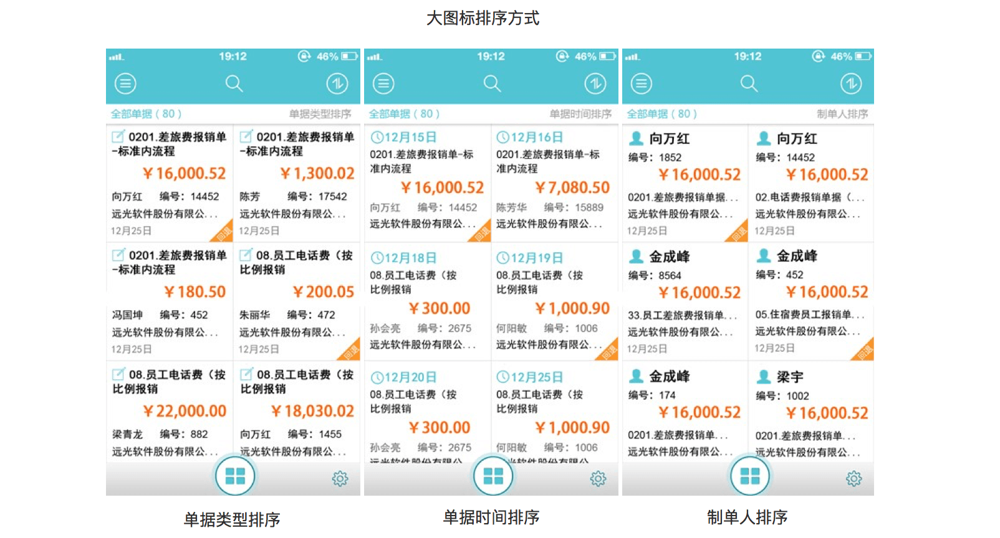
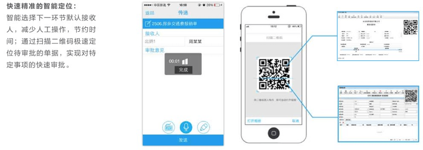

项目背景
瞬息万变的时代早已到来，移动办公成为一种信息化趋势，拜托办公场所束缚和限制，随时随地进行邮件收发、业务审批、协同办公、联网查询等公务处理，有助于企业工作效率提高、缩减工作时间、降低办公费。而远光移动审批系统就是基于这样的背景下推出的，利用移动智能设备和无线互联网，提供无所不在的移动便捷高效办公支持。让用户充分利用碎片时间处理事务性工作，高效时间管理。同时解决企业工作流的效率瓶颈，提升组织整体工作效率。
深度信息化企业面临新问题？
全流程展示
交互细节说明
方案完整说明
在企业信息化上面，移动端有着不可忽略的重要地位。我一直希望能探索更多的适用场景，充分发挥应用价值。移动应用不是ERP的移动化，而是基于移动场景的业务需求。这些需求通常是碎片化的节点应用，不强调在移动端上实现完整的流程，而是根据场景存在许多的节点应用，而且应用针对性极强，操作也应极为简单。如，一个主管用手机可审批业务，也可查看联系人并安排工作，查询薪资，晚上查询当天的业务日报…….
在学习过程中，我也思考，移动办公中存在的问题。如应用深度的问题，移动化仅作为一种应用访问手段，用以改善现有的应用服务。可能出现的问题是：这种浅层次应用未能从全局角度考虑如何实现新业务的移动化，难以与集团信息化的总体目标保持一致，难以保持移动应用的长期效果。“移动应用的目的是业务创新，而非现有应用在移动终端上的延伸。”所以企业要明确移动应用的战略目标。”